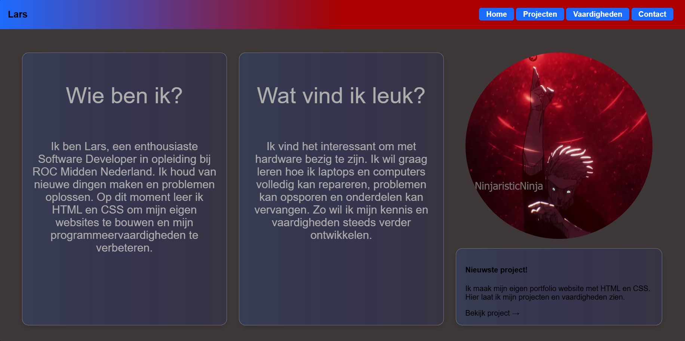
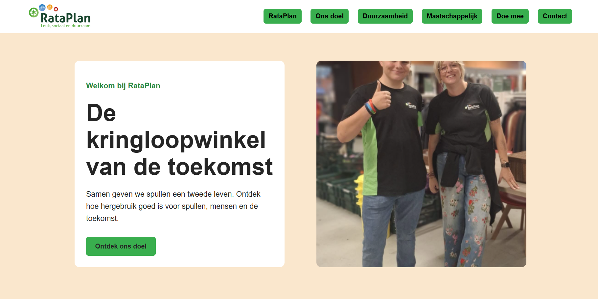

PROFIEL CARD
LV. 01

Mijn profiel
Type: HTML / CSS
Mijn persoonlijke portfoliowebsite, gemaakt met HTML en CSS. Hier laat ik mijn projecten zien en verbeter ik mijn vaardigheden als software developer.
💻 Development
⭐ Eigen werk
Bekijk project →
Rataplan
lv.1

Goededoel-opdracht
Type: HTML / CSS
Voor deze opdracht maakte ik een website voor Rataplan. Dit was mijn eerste echte project, waarin ik mijn HTML- en CSS-vaardigheden in de praktijk kon toepassen.
💻 Development
⭐ Eigen werk
Bekijk project →